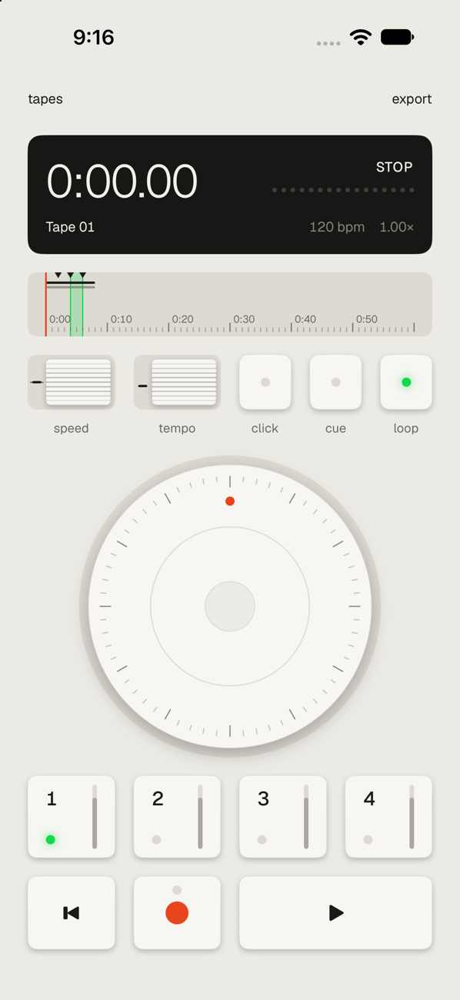
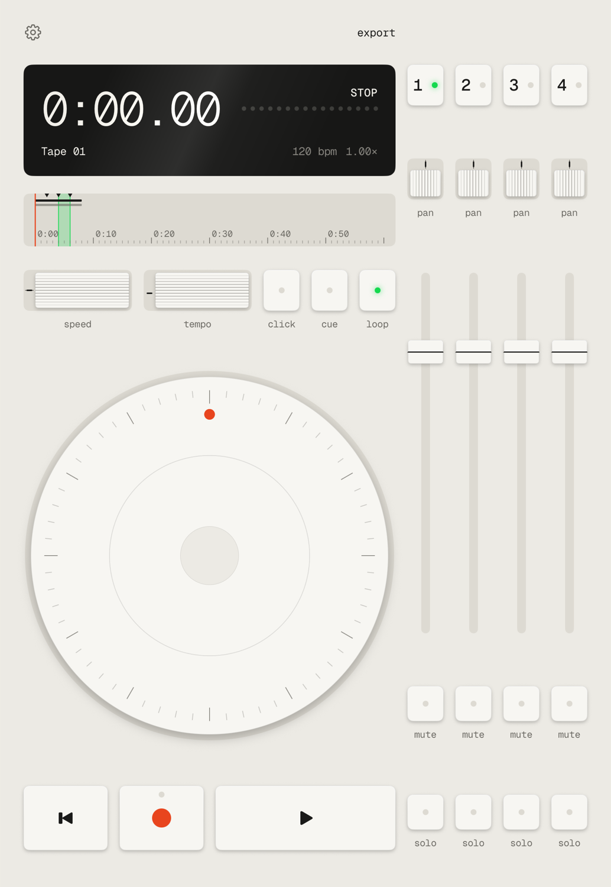
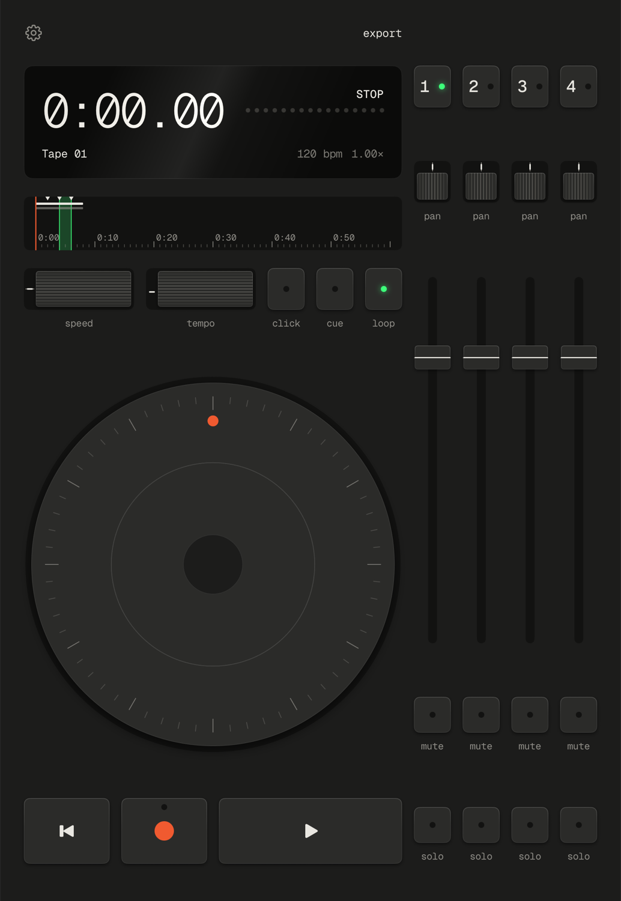
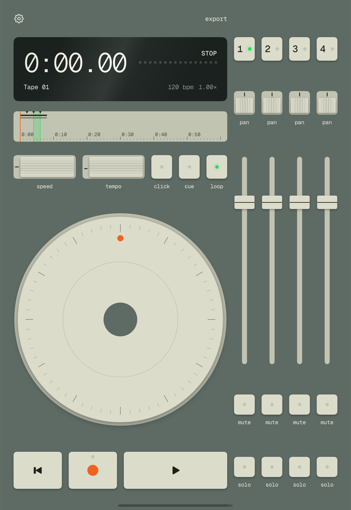

A four-track tape recorder for iPhone and iPad.






Catch an idea
Open it, press record, play. It’s saved when you stop.
Layer a demo
Guitar first, then bass, then a voice. One track at a time, up to four.
Work on a part
Loop the bars you keep missing and play them until they stick.
Play in time
Turn on the click and record along to it.
Bend the sound
Slow the tape down or speed it up. The pitch goes with it.
Send it to someone
Save the mix as a WAV file and share it with your band.
Plug things in
Tapes records from whatever input your iPhone or iPad is using. Connect USB audio gear and that becomes the input.
Tracks are mono, so a stereo source is mixed to one channel.
Hear it as you play
Plug in a synth, put on your headphones, and you hear it through your iPhone or iPad. Press play and the tape takes over.
Wireless headphones play the synth a moment late. That suits a sequence. To play by hand, use wired ones.
Three finishes
Light, Dark and Green. Orange means recording. Green means on.